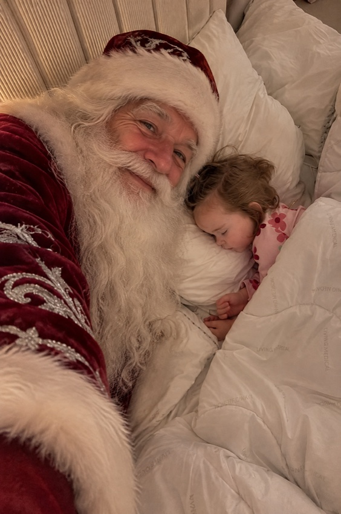

Какое у вас фото?




Одеяло, руки и игрушки не закрывают лицо, в кадре один ребёнок.
Включите ночник или бра. Снимок должен быть светлым и чётким.
Подойдите ближе, чтобы ребёнок занимал заметную часть кадра.